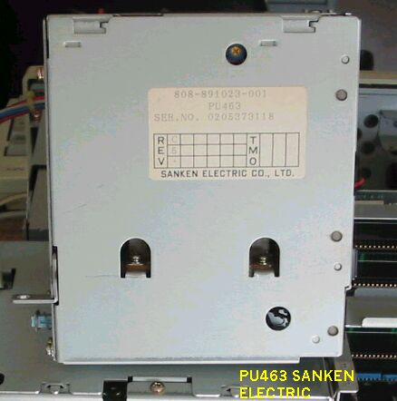
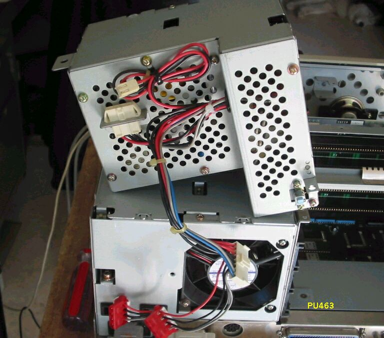
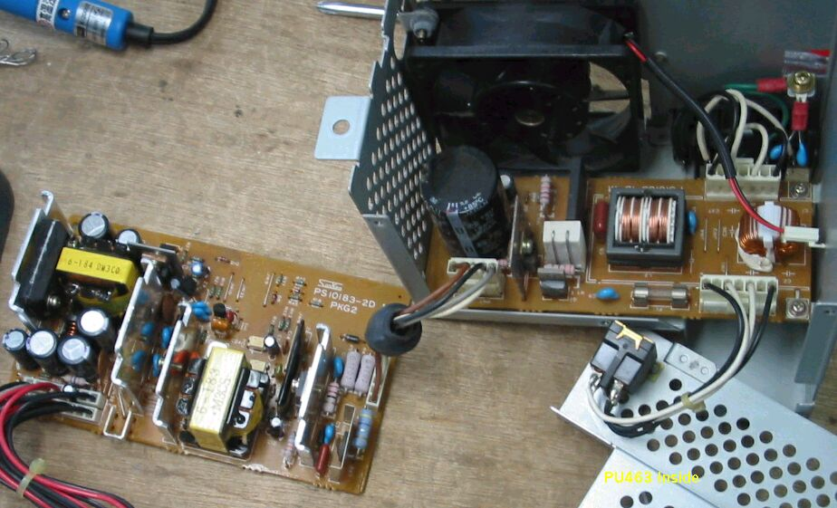
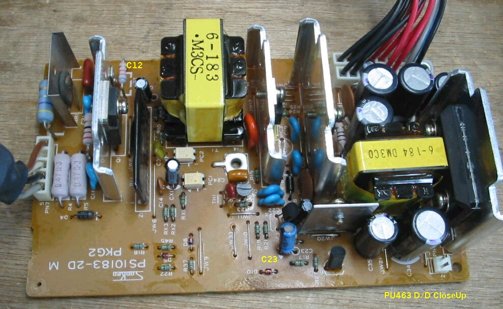
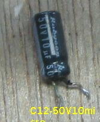
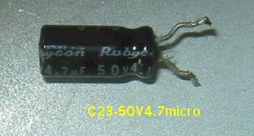
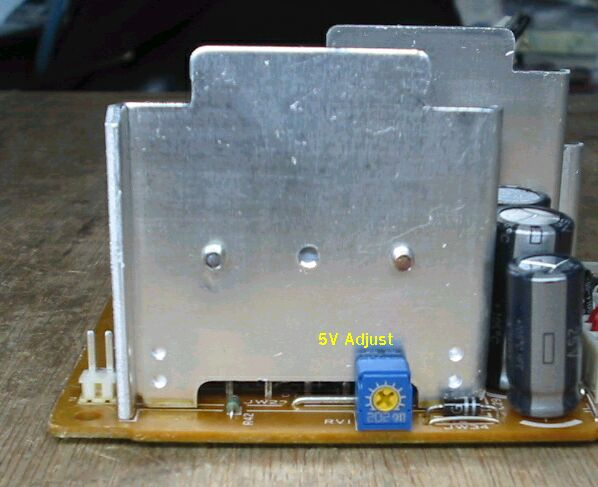

(その１)PC-9801DA/DS/DX/RA/RS/RX用電源ユニットPU463を修理する
動作しないPC-9801RS21を入手しました。電源が入らないのですが、1989年から1991年にかけて、
作られたものなので、すでに13～14年経っており、当然のことながら電解コンデンサなどの劣化が、
相当進んでいると考えられます。これまでに入手した、DX/RX/DSでも電源故障に出会っています。
今までは、ユニット内のプリント基板をより新しい486機のものと交換して、しのいできましたが、
それもなかなか入手できないので、思い切って修理してみることにしました。
電解コンデンサ１個の交換だけで、以外と簡単に修理ができ、さらに、放置してあったもう１個のユニット
もほとんど同じように修理できたので、自信を深めています。古いパソコンを使い続けるのに、苦労され
ている方のため、こんなに簡単に直ることもあるのだという意味で、ご紹介します。
PU463を横から見たところ、写真はRXから取り出した故障品で、やはりSANKEN ELECTRIC製です。

PU463をコネクタ側から見たところ、下はRS本体、修理済みの電源ユニットが取り付けられています。

PU4632を分解したところ、清流部、+5V、+12V、-12Vを作るD/D部、スイッチ部に分かれる。

D/D部、今回修理した部分。
D/D部のプリント基板を、ルーペを使って詳細にチェックします。ポイントは小容量の、電解コンデンサです。RS用のユニットの場合、
C12の足に緑青が発生しており、その部分の基盤が汚れていました。そのコンデンサを外し、同等のものに交換します。
電圧は50V、容量は10マイクロF以上、容量の方はあまりこだわる必要はありません。取り付ける前に、基盤の汚れたところ
を丁寧に拭いておきます。この１個のコンデンサを取り替え、仮組して電源を入れると、無事復旧しました。気になる方は、
他の小容量電解コンデンサを、予防交換しておいても良いでしょう。
これに味を占め、放置してあったRXから取り外したと思われる、もう１個の電源ユニットも、修理してみることにました。今度は、
別のコンデンサC23が悪くなっていました。50V4.7マイクロFです。同様に交換すると、１発で成功です。

PC-9801RSの、今回取り替えた電解コンデンサC12-50V10μF。
足の部分の、パッキングがはみ出して、電解液が漏れ、導線の部分に緑青が出ています。

PC-9801RXの、今回取り替えた電解コンデンサC23-50V4.7μF。
これも同様に、足の部分のパッキングがはみ出して、電解液が漏れ、導線の部分に緑青が出ています。

（2003/09/18 記）
PC-9801RXの電源再度故障
CX1-50V0.47μF、C12-50V10μF交換で復旧。取り外した電解コンデンサを、テスターで計ると、絶縁不良になっていた。
やはり、怪しい部品は、できるだけ交換しておいた方がいいようです。その他に、これとは別のRXの電源を修理中に、プリント
パターンがはがれてしまったことがあり、半田付け時に、熱を加えすぎないよう注意が必要。
(2003/09/29 記)
PC-9801RSの電源PU463A故障修理
オークションで購入したPC-9801RSの電源が壊れていた。スイッチを入れても電源が入らない。この電源ユニットは、
コネクタが違うだけで、RXのpu463と全く同じように見える。早速分解してみると、目立った損傷は見つからない。
例によって、ルーペの倍率を上げ、小容量コンデンサを、詳細に観察する。C12-50V10μFの頭の部分に、
液体が飛び散った後があり、汗をかいたようになっている。このコンデンサを交換したところ、見事に復旧した。
(2003/10/19 記)
PC-9801DAの電源PU463A故障修理
オークションで購入したPC-9801DAの電源が壊れていた。スイッチを入れても電源が入らない。この電源ユニットは、
PU463Aで、早速分解してみると、目立った損傷は見つからない。例によって、ルーペの倍率を上げ、小容量コンデンサを、
詳細に観察する。C23-50V4.7μFの足が汚れ、緑青が発生している。このコンデンサを交換したところ、見事に復旧した。
他にも怪しいコンデンサが何個かあるので、50Vの小容量コンデンサを補充してから、交換しようと思っている。
修理後、5Vの電圧を測ると5.8V位に上がっていた。写真の5V-Adjustの可変抵抗で、5.0Vに調整。

(2003/10/25 記)
PC-9801RSの電源PU463故障修理（その２）
オークションで購入した、上とは別の、PC-9801RSの、電源が壊れていた。スイッチを入れても電源が入らない。
早速分解してみると、目立った損傷は見つからない。
例によって、ルーペの倍率を上げ、小容量コンデンサを、詳細に観察する。C12-50V10μFの足の部分が、
汚れて緑青を吹いている。このコンデンサを交換したところ、見事に復旧した。
(2003/10/27 記)
PU463故障修理その後
この１ヶ月くらいで、３台のPU463/Aを修理した。３台とも、C12-50V10μFが不良で、そのうち１台は、
C23-50V4.7μFもダメになっていた。修理に使用する電解コンデンサは、地元にはないので、秋葉原に１日がかりで
出かけた。同型の古いものは、日米商事にふんだんにある。自動組み立て用のテープから、１０個位ずつ切り取った
ものが、100円で買える。新しい型のは、非常に小さくなっており、千石電商の地下などで、１個単位で買える。
(2003/12/8 記)
PU463故障修理、追加データ
この3ヶ月くらいで、10台のPU463/Aを修理した。9台は、C12-50V10μFが不良だった。
1台は、C12他、いくつかの電解コンデンサを、取り替えたが、直らず、プリント基板ごと
、PC-9821Bsなどに使われていた、DELTA ELECTORONICS製の、DPS-102に交換した。
基盤のサイズが、ちょうど同じなので、うまく収まる。電線の半田付け、絶縁などに注意し、
根気よくやれば、１時間もかからずに完成する。BX、Xe、などの電源基盤も使える。
(2004/03/11 記)
ホームページに戻る